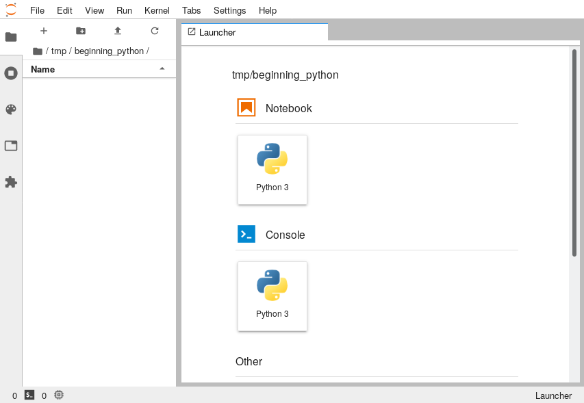

Miniforge
Install Miniforge
Miniforge is a lightweight installer that sets up Conda to install packages from conda-forge, a robust environment for data science and machine learning workflows.
Go to the conda-forge website and download the latest version of Miniforge for your operating system.
Windows: Download the Miniforge installer for Windows. Run the installer and follow the prompts.
Mac/Linux: Download the appropriate installer script (2021 and newer MacBooks) and and run:
Terminal/Command Prompt
bash Miniforge3-MacOSX-arm64.shFollow the on-screen instructions.
Verify installation
After installation, open a command prompt/terminal and check if Conda is installed:
Terminal/Command Prompt
conda --versionCreate a new environment
Open a command prompt or terminal. Use the following command to create an environment named training with Python 3.12, Jupyter Lab, Jupyter Notebook, Pandas and Scikit-Learn:
Terminal/Command Prompt
conda create -n training python=3.12 jupyterlab pandas seaborn scikit-learnThis installs all specified packages in one command.
If you need to install additional packages, use conda install. For example, to install scipy type:
Terminal/Command Prompt
conda install -n training scipyActivate the environment
To activate the newly created environment type:
Terminal/Command Prompt
conda activate trainingThe terminal prompt will change to show (training) indicating the environment is active.
Last, launch Jupyter Lab by typing:
Terminal/Command Prompt
jupyter labThe Jupyter Lab interface should open on your local web browser:

We’re now ready to get started!